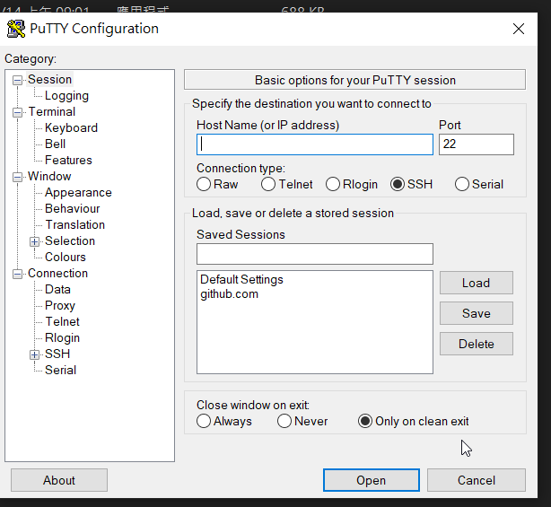
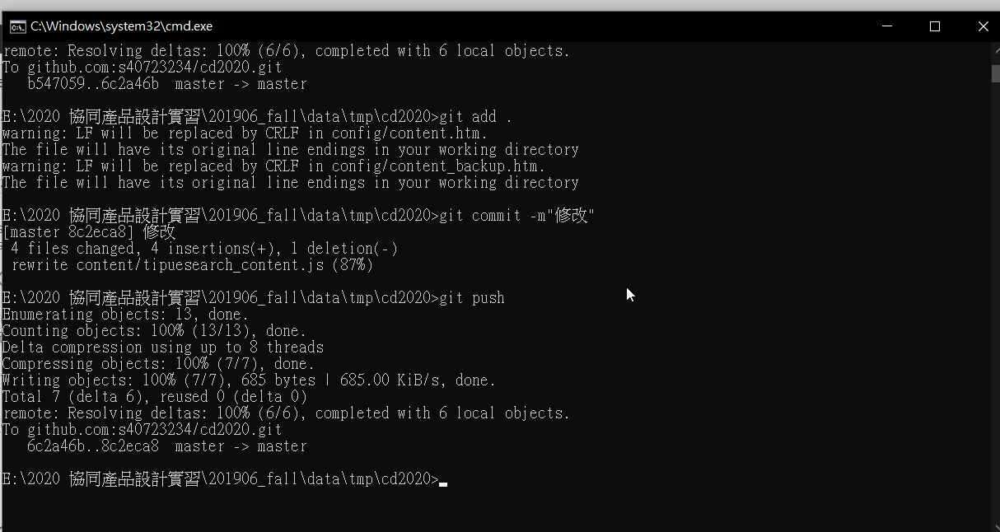
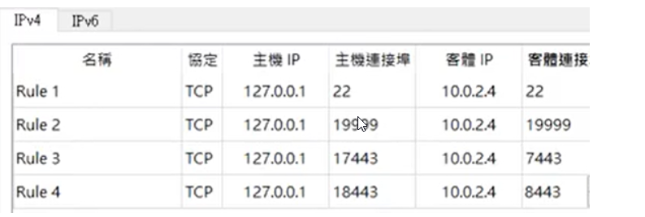

ssh-keygen -t rsa -b 4096 -C "使用者學號"
set GIT_HOME=%Disk%:\portablegit\bin\ set GIT_SSH=%Disk%:\putty\plink.exe(5)進入config中更改指令
url = git@github.com:mdecourse/cad2019.git在mdecourse的地方要改成自己的學號

以下是影片，開cc字幕

Copyright © All rights reserved | This template is made with by Colorlib